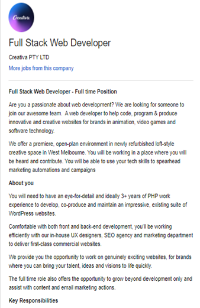
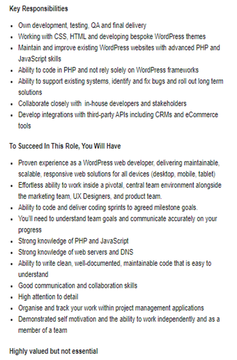
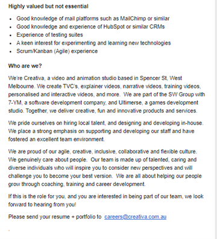
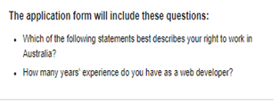

note all images are include below
This position involves developing the front and backend of websites with coding and software. For the business clients which different industries such as animation, video games, software technology etc. This position appeal to me for multiple aspects such as a productive corporate culture e.g., “You will be heard” shows the business strives for productivity as well as an “open work environment “that boosts productivity and quality. Another aspect that is appealing to me was “training and career development” as this would push me into a position that is more challenging and rewarding. The teamwork and collaboration “you’ll be working with UX, SEO, marketing” was also appealing to me as this opportunity would allow me to learn skills from the other group members and build relationships with my colleagues.
This position requires many skills such as “tech skills” such as working with CSS, HTML to develop WordPress websites, Knowledge of PHP coding, debugging websites, Advanced knowledge and experience with JavaScript coding and knowledge of web servers and DNS. Other technical skills include using software such as mail chimp email marketing. Other personal skills include strong communication and the ability to work in teams from different departments as well as working independently with attention to detail and organisation. The experience required for this position includes developing, maintaining many WordPress websites for a minimum of 3+ years. The qualifications are not listed however I believe Courses and certifications related to IT, web development and programming would be beneficial.
The technical skills I have included very basic knowledge of HTML and CSS (hopefully more by the end of this assignment.), Have played around and made some basic WordPress websites. Qualifications google digital garage certificate may be useful for working with marketing and Website SEO. Do not have any proper experience relating to relevant coding and other business software. The personal skills I currently have include Communication and teamwork mostly acquired from volunteering and school projects.
When it comes to tech skills, I plan on learning the coding languages in my spare time and over the holidays. Possibly through coding sites such as code academy, YouTube tutorials, coding boot camps, an experienced tutor or teacher, self-learning books etc. Once I can learn the coding this will allow me possibly to develop, debug sites using word-press and other software. Which I could also learn through the same methods as the user for the coding languages. In terms of qualifications, I could complete certain certificates in terms of coding to fortify and display my skills, consider a diploma in web development and do well in the Bachelor of Information technology. In terms of Experience, once I can figure out the coding and relevant tech skills, I could freelance web development projects possibly on sites such as Fiverr or make a profile of websites to display my experience and skills. For personal skills, I could continue to build on communication and teamwork through volunteering and future group University assignments, organisation, attention to detail and working independently skills could be developed from day-to-day tasks overtime.
   Return to homepage